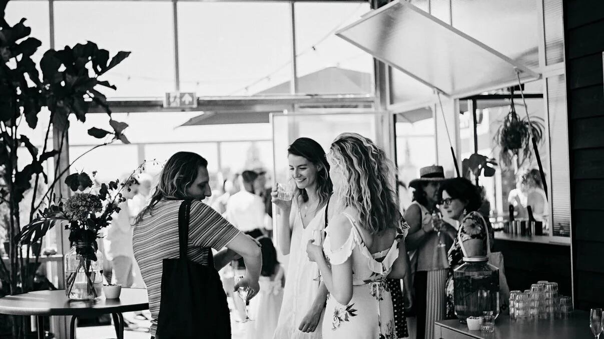
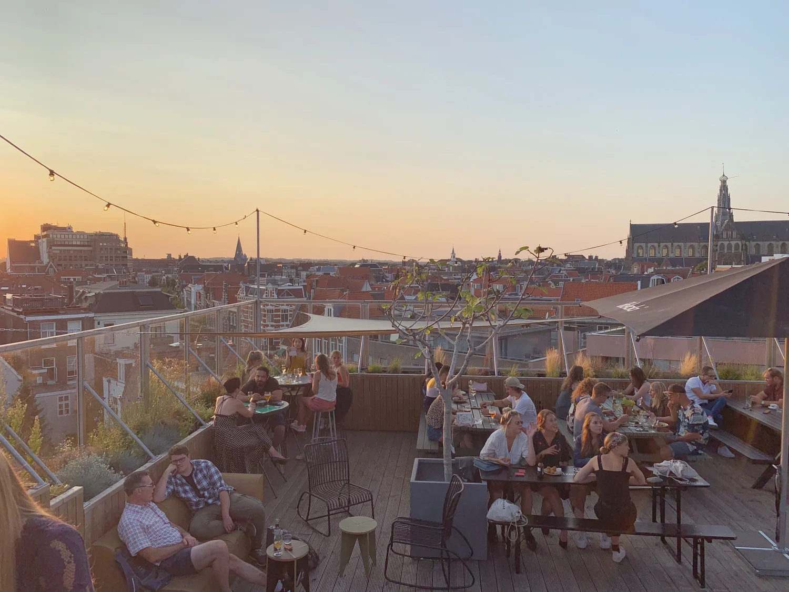
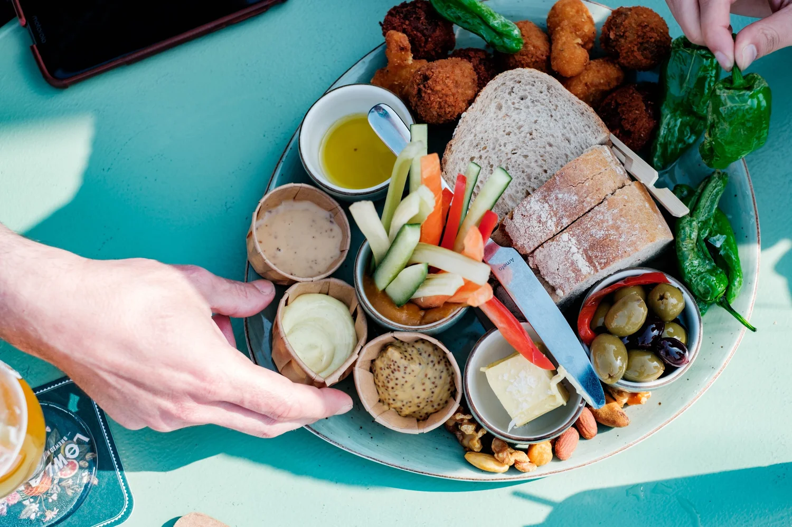
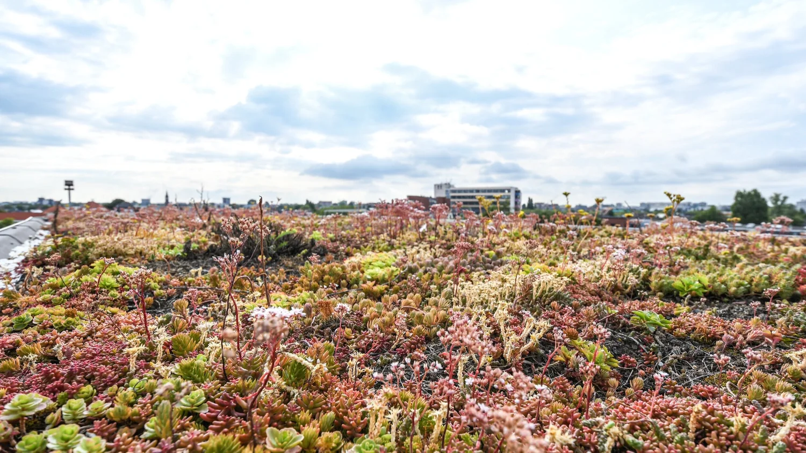
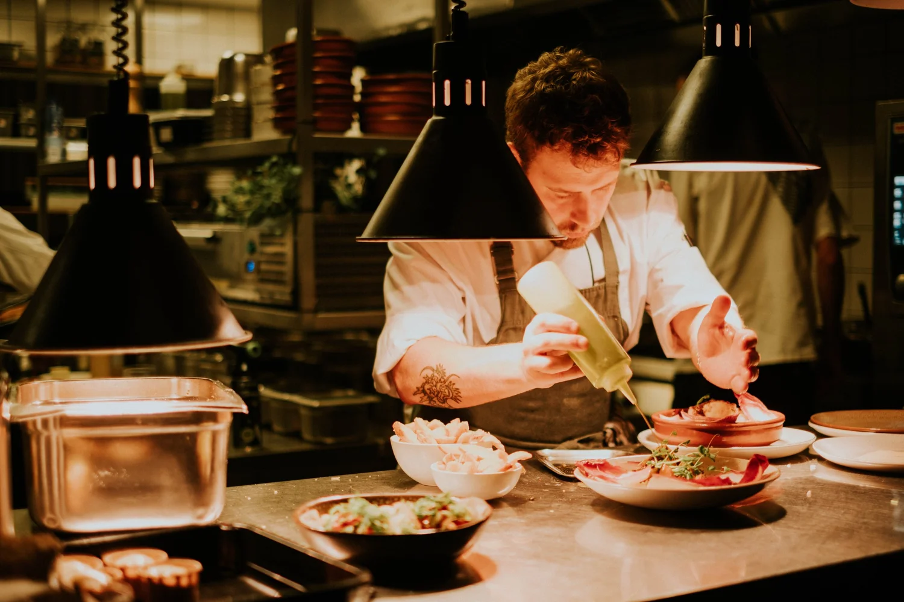
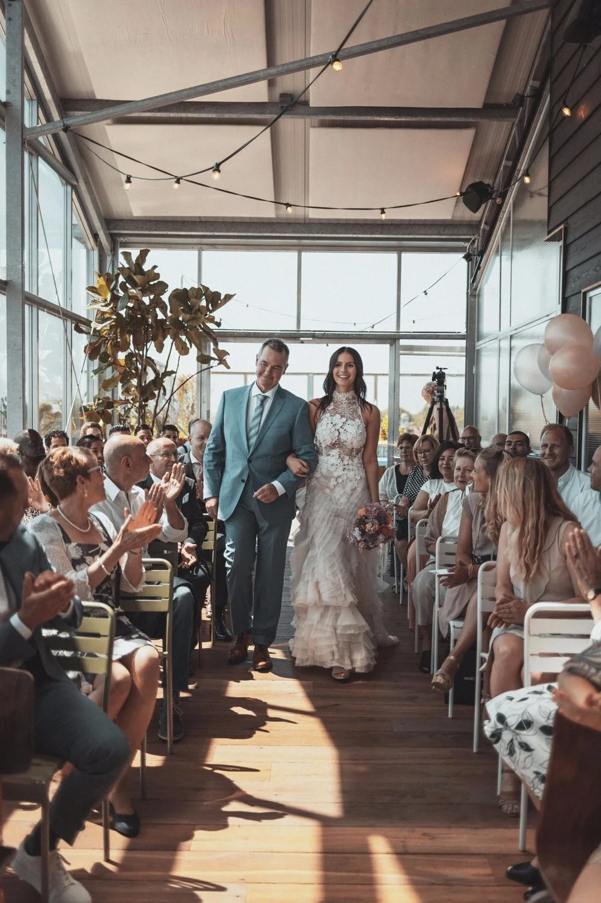
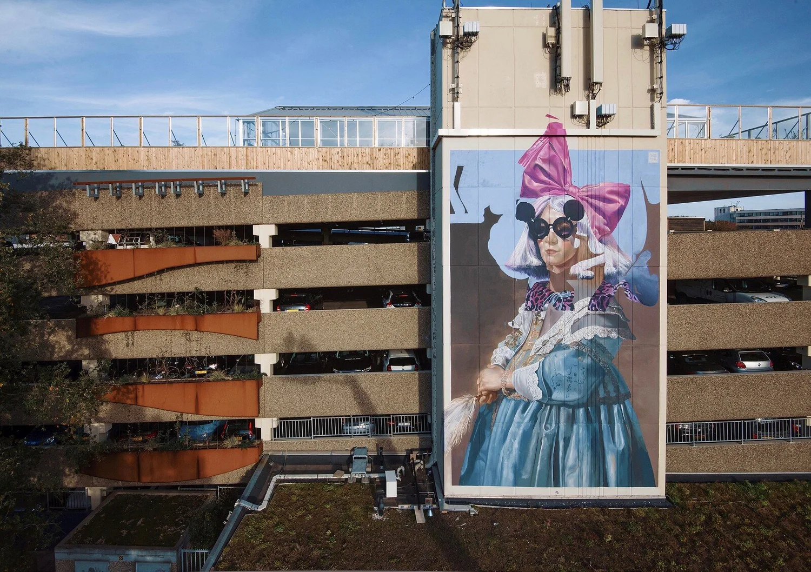
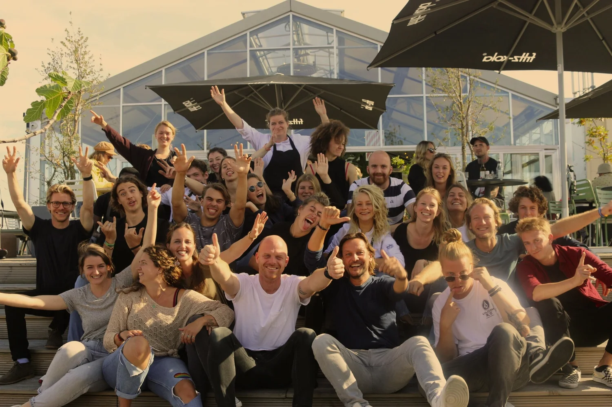

Borrel
In de borrelhoek (hoge tafel en barkrukken) voor gezelschappen tot ongeveer 30 personen. Voor 35 tot 80 personen is er de privézaal. Een borrelassortiment is mogelijk.
reservering@dedakkas.nlOp het dak van parkeergarage De Kamp, Haarlem
Ontbijt, lunch, borrel en diner in een glazen paviljoen boven de stad. Met uitzicht over de oude binnenstad tot aan de eerste glooiingen van de duinen.
Elke dag open vanaf 10:00

De krant lezen met een lekker bakkie koffie of even bijkletsen met vrienden. Wat mails versturen of gewoon even je hoofd helemaal leeg maken; het kan bij DeDAKKAS.
En als het later wordt: zie de zon in de duinen zakken. Reserveer een plekje in de kas of kom langs voor een spontane borrel.
We werken het liefst met lokale producten, of producten die op een andere manier impact maken. De kaart wisselt met de seizoenen, op basis van wat er dat seizoen in Nederland beschikbaar is. Voornamelijk plantaardig, maar ook vlees en vis.
Liever de originele kaart? Menukaart (pdf) · English menu & drinks (pdf)
V vegetarischVG veganGV glutenvrij mogelijk
V vegetarischVG veganGV glutenvrij mogelijk

We houden van bier. Vijftien bieren op tap, aangevuld met bieren op fles, en ook de bierkaart wisselt met seizoensbieren.
Gezond drinken hoort er net zo goed bij. Daarom is er een ruime keuze aan alcoholarme en -vrije dranken: witbieren en IPA’s zonder alcohol, een verrassend goede Prisecco (een alcoholvrij alternatief voor mousserende wijn, op basis van vruchtensap) en alcoholvrije cocktails.
Parkeergarage De Kamp werd in 1973 als een vreemde eend in het historische centrum geplaatst. Maar eenmaal op het dak zie je wat één van de lelijkste gebouwen van Haarlem één van de mooiste plekken maakt: het panoramische uitzicht over de oude binnenstad, met aan de horizon de duinen. Een paviljoen van glas, zodat je het uitzicht vanuit elke hoek ziet. Een kas op het dak.
Op een vroege ochtend in januari stond Dennis op het dak van De Kamp. Daar ontstond in hoofdlijnen het idee. Met 3D-impressies, plattegronden en hele rollen schetspapier kreeg DeDAKKAS een eigen identiteit nog voor het er was.
Victor van Veelen sloot aan. Op World Parking Day organiseerden ze een spontane dakborrel; de opkomst liep een beetje uit de hand, waarna ze vriendelijk werden verzocht het dak te verlaten.
Na een ruimtelijke onderbouwing en een fel debat in de gemeenteraad over parkeren in de stad werd de vergunning bezegeld. Daarna vonden Dennis en Victor in Jeroen de horecapartner met ervaring.
In honderd dagen haalden 289 funders 250 duizend euro op. Daarmee werd ook het gesprek met de bank een stuk eenvoudiger.
In januari begon de bouw, op een extra stevige stalen vloer; het interieur kwam van BuroCraft. Na vijf maanden bouwen en vier en een half jaar voorbereiding gingen de deuren open. Er wees beneden nog niks naar het dak, maar heel veel mensen wisten de kas al snel te vinden.

Met je team, je familie of je vriendengroep. Achterin de kas ligt een eigen zaal van 12,5 bij 4 meter (50 m²), volledig af te sluiten, met openslaande deuren naar een privé dakterras van 30 m² en rolstoeltoegankelijk.

In de borrelhoek (hoge tafel en barkrukken) voor gezelschappen tot ongeveer 30 personen. Voor 35 tot 80 personen is er de privézaal. Een borrelassortiment is mogelijk.
reservering@dedakkas.nl
Aan één lange tafel met 20 tot 34 personen, in een eigen ruimte met eigen terras. Of een walking dinner tot 60 personen: kleine gerechten in vijf gangen met producten van het seizoen.
zaal@dedakkas.nlEen heidag met letterlijk overzicht. Meerdere opstellingen, flip-over en wifi, vanaf 8 personen. Lunch met een selectie van onze broodjes, op schalen om zelf te pakken.
€300 per dagdeel (ochtend 9:00–12:45 of middag 13:00–16:45), €500 voor een hele dag (9:00–16:45), excl. btw.
zaal@dedakkas.nl
Een intieme ceremonie tot 50 personen, een diner tot 34 aan een lange tafel of een walking dinner tot 60, en daarna borrelen tot 80 personen. Locatiekosten €900 per dag; diner, borrelhappen, dranken en proostmoment komen daarbij.
zaal@dedakkas.nlDranken gaan op nacalculatie: je betaalt alleen wat er gedronken is. Vooraf spreken we een budget af en we geven een seintje als dat in zicht komt. Muntjes kan ook.
Annuleren kan kosteloos tot drie dagen van tevoren; daarna rekenen we 50% van de afgestemde menu’s. Wordt het gezelschap kleiner, laat het ons weten.
Fotoshoots zijn welkom. Een kleine productie (fotograaf en model): stem even af. Rustigst buiten lunch (12:30–15:00) en diner (17:30–20:00). Grotere producties kunnen in de zaal.
Afhuren kan in januari en februari op maandag, dinsdag en woensdag: voor een bedrijfsfeest, een zakelijk event, een shoot of tv-opname. Verder blijven we altijd open voor iedereen, en versterkte optredens doen we niet, vanwege de buren.
Mail zaal@dedakkas.nl; we reageren binnen twee werkdagen.
Natuurlijk kun je gewoon een hapje komen eten of een verse muntthee of een donker biertje drinken. Niks moet. Maar het hele jaar door is er ook een programma op het snijvlak van ondernemerschap, persoonlijke ontwikkeling, creativiteit en cultuur. Denk vooral niet in hokjes.
Volg het programma op InstagramSamen of alleen aan een lange tafel, soms met een brouwer of wijnmaker erbij.
Stand-up met dat uitzicht over de stad.
Dan verandert de kas in een concertzaal of een feest.
Yoga en dans in de vroege ochtend.
Zoals een Paasbrunch en een kerstavonddiner.

Portrait of a Girl in Blue and Pink, Miel Krutzmann en Telmo Pieper (TelmoMiel)
In 2018 maakten TelmoMiel, op initiatief van DeDAKKAS en Studio Locomoco, de grootste muurschildering van Haarlem op de liftschacht van De Kamp. Het ‘portret van een meisje in blauw’ van de Haarlemse schilder Johannes Verspronck hangt in het Rijksmuseum; zij haalden haar terug naar haar woonplaats, met het haar, de bril en de roze strik van een festivalmeisje. De buurt doopte haar al snel ‘Mona Gaga’.
TelmoMiel op InstagramMeerdere werken, Gerrie Starreveld
Voor de tweede Haarlemse Stripdagen in 1994 gaf Gerrie Starreveld elke verdieping van De Kamp een eigen stripfiguur. Zo onthoud je dat je bij Sjef van Oekel staat in plaats van 4A. Vanuit de kas kijken we uit op Franka in een witte Amerikaanse cabriolet.
Nu: Sander Beeksma, ‘Peaks of joy’ (2026)
In de kas hangen foto’s van Haarlemse fotografen, jong en minder jong talent; om de zoveel tijd wisselen de werken. Sander Beeksma toont beelden van een reis met vijf vrienden naar de Lofoten. Eerder hingen hier onder anderen Daniel Maissan & Lisa Dupuy, Sebastiaan van Walraven, Félice Hofhuizen, Inga Powilleit, Jaap Kroon, Karen Winnubst en Gwen van den Boogaard.

Een goede werk-privébalans, overuren eerlijk gecompenseerd in tijd of geld, een afwisselende kaart met ontbijt, lunch en diner, gezond personeelseten en een hecht, gezellig team.
Per direct, 32/38 uur in 3/4 dagen. Samen met bedrijfsleider Noor regel je alles op en rond het dak, van groepsaanvragen tot events als Popronde of Koningsdag.
32/38 uur in 3/4 dagen. Een keuken volgens de principes van Dutch Cuisine: seizoensgebonden, creatief, plantaardig en lokaal. Je start aan de koude of borrelkant en groeit door naar warm en pas.
Per direct, 32/38 uur in 3/4 dagen. Eerste aanspreekpunt voor gasten tijdens jouw dienst.
Met of zonder ervaring: we leren je graag de kneepjes van het vak.
Cadeaubonnen van €10, €25 en €50, te koop aan de bar. Vanaf €200 aan bonnen sturen we ze ook op: mail je adres en welke bonnen je wilt naar info@dedakkas.nl, dan krijg je een factuurtje.
In Hoofddorp, in een boerenschuur uit 1880 die in 2022 plank voor plank werd herbouwd in Hyde Park, vlak naast station Hoofddorp. Koffie, borrel of diner, binnen of op het terras tussen de kastanjebomen, met 16 bieren van de tap.
023 574 9526info@dedakkas.nlInstagram
Op het dak van parkeergarage De Kamp, in het centrum. Goed bereikbaar met auto, fiets en openbaar vervoer. Neem het trappenhuis aan de kant van de Witstraat; daar is ook een lift, dus goed bereikbaar met rolstoel en kinderwagen. Met de auto rijd je gewoon naar boven en parkeer je voor de deur.
Reserveer een plek| Maandag | 10:00 – 22:00 |
|---|---|
| Dinsdag | 10:00 – 22:00 |
| Woensdag | 10:00 – 22:00 |
| Donderdag | 10:00 – 23:00 |
| Vrijdag | 10:00 – 24:00 |
| Zaterdag | 10:00 – 24:00 |
| Zondag | 10:00 – 22:00 |